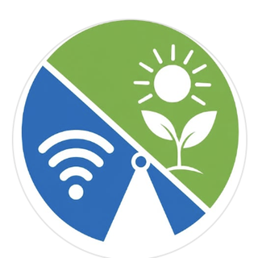

Intentional Tech in SchoolsSMFCSD Parent Coalition

Since the pandemic, digital platforms and 1:1 devices have become embedded in everyday instruction, often displacing teacher-led and hands-on learning.
We're concerned parents hoping to work alongside district leaders to make sure technology is used thoughtfully, with an honest look at what we're getting in return for the instructional time, student data, and taxpayer dollars invested.
"It's too tempting not to use AI if it's right there."
"Everyone knows how to bypass GoGuardian."
"It's distracting when other kids are going online or playing games in class and I'm still doing work."
"What was wrong with computer labs? Why can't we go back to that?"
"Why do elementary students need access to the internet?"
"It's really hard for students to stay focused when they each have a laptop on their desk."
"The kids don't interact as much when they have the choice to use their devices."
If a public school is putting a technology or AI product in front of children, parents should be able to ask:
Share information about this work with your school community, while remaining neutral if preferred. Consider ways you can support more offline experiences in classrooms and schools.
Your classroom experience is vital to this conversation. Share your perspective with us or through teacher surveys, anonymously if preferred. Consider involving your union representatives to help ensure teachers' voices are heard and protected.
District decisions affect every school. Share concerns and questions with district leaders and Board members, attend a Board meeting, or share the petition. Ask teachers what would help support more offline learning in your child's classroom.
Join nearly 600 local parents, community members, and school staff working to bring balance back to classrooms.